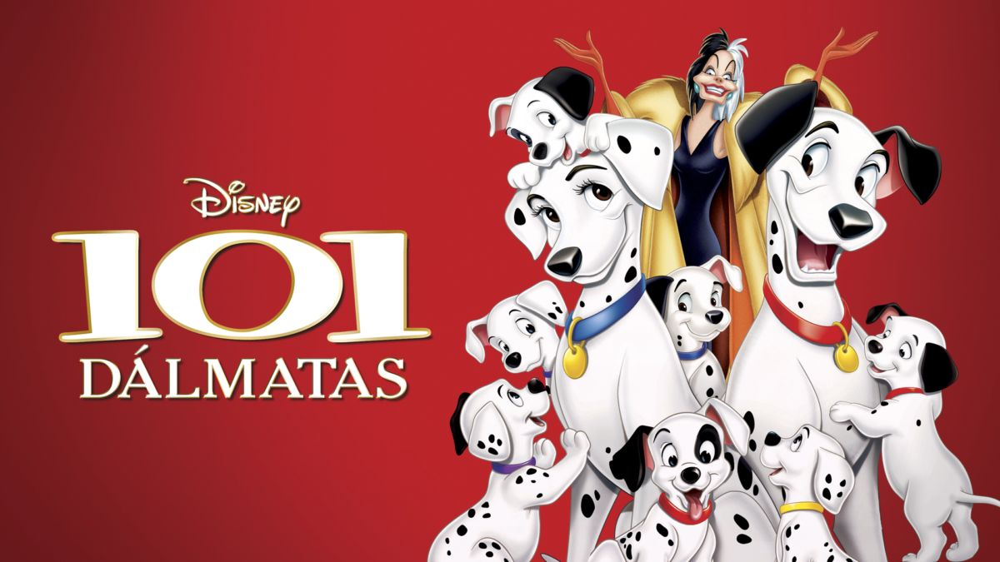
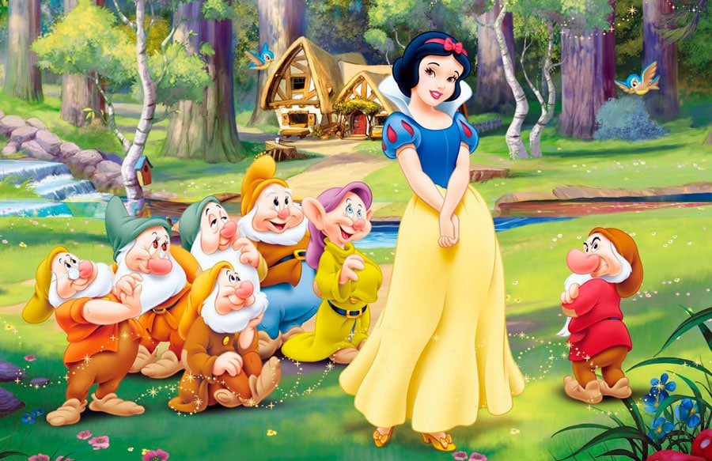
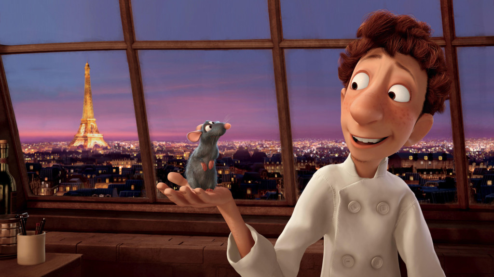
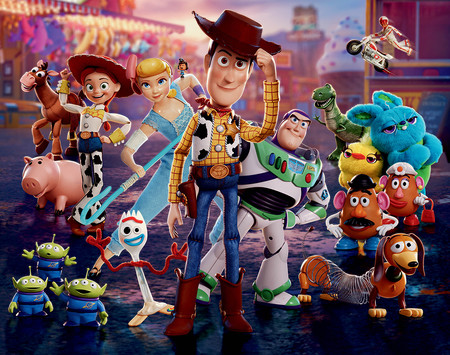

Esta es mi opinion de las peliculas que mas marcaron nuestra infancia sobre los clasicos de Disney
101 dálmatas
Hay muchas villanas memorable en los Clásicos animados de la compañía, pero yo siempre me quedaré con la temible Cruella de Vil, en parte por tener una mayor apego a la realidad en lugar de tener un origen más propio de mala de cuento. Eso sí, la película también funciona bastante bien hasta su aparición con todo lo referente a Pongo, Perdita y sus dueños, pero luego pasa a otro nivel gracias a ella.
Blancanieves y los siete enanitos
Es verdad que en ella hay ciertas situaciones que pueden verse como un tanto cursis por parte del público actual, pero su indiscutible encanto se sobrepone a todas ellas ante el enorme trabajo realizado en ella, el cual va desde la animación hasta los propios personajes el único que fala ahí es el príncipe, pero la verdad es que tampoco necesitaba más de él aquí, en especial los simpáticos enanitos.
Enredados
La magnifica historia de una joven de 18 años que su mamá no la dejaba salir de la torre pero ella descurbrió algo increible que su mamá le ocultaba
.jpg)
Ratatouille
Ratatouille es una película que nos enseña el importante mensaje de lo duro que puede ser a veces ser uno mismo. Nos permite darnos cuenta de que lo que uno quiere, o lo que uno es, no siempre es fácil, tenemos muchas barreras que nos pueden limitar.
Toy Story
Historia de unos juguetes que tienen vida e intentan hacer feliz a su dueño
La Bella y la Bestia
Si tuviera que decir cuál es la mejor película de Disney, sería la que aquí nos ocupa. Una auténtica joya que se convirtió en la primera producción animada que fue nominada al Oscar a la mejor película. Una lástima que compitiese contra una obra maestra como 'El silencio de los corderos', ya que es un cuento de hadas ejemplar que realmente tiene esa magia que es tan difícil de definir, empezando por sus personajes, siguiendo por sus canciones -la inicial da pie a la que probablemente sea la mejor introducción de la historia del cine- y pasando por todo lo demás.
.jpg)
La dama y el vagabundo
Una bonita historia donde dos perros de clases distintas se enamoran y tienen que afrontarse sobre sus adversidades
.jpg)
Lilo y Stitch
Una familia conformada por dos hermanas que adoptan a un mounstrito de dudosa procedencia donde tiene que defender a la linda hermanita menor llamada Lilo
.jpg)
Mulan
Una joven que decide que es mas importante salir a la guerra transformandose en hombre que casarse y asi poder salvar a china de todo peligro
.jpg)
La princesa y el sapo
Tiana es una chica que tiene un sueño de crear su propio restaurante por preservar el sueño de su papá pero llegó el principe Navin, eso provocó que su mundo se volteara de cabeza ya que los dos se convirtieron en sapos por culpa de un malvado hechicero ambicioso
.jpg)
Todas estas peliculas las puedes encontrar y disfrutar en esta plataforma. Enlace
Para más detalles de las peliculas haz click en el siguiente video AQUÍ
| Pelicula | Año | Produccion |
| 101 dalmatas | 1961 | Walt Disney |
| Blanca nieves y los siete enanos | 1970 | Walt Disney |
| Enredados | 2010 | Walt Disney |
| Ratatouille | 2007 | Pixar |
| Toy Story | 1995 | Pixar |
| La bella y la bestia | 1991 | Walt Disney |
| La dama y el vagabundo | 1955 | Walt Disney |
| Lilo y stich | 2002 | Walt Disney |
| Mulan | 1998 | Walt Disney |
| La princesa y el sapo | 2008 | Walt Disney |